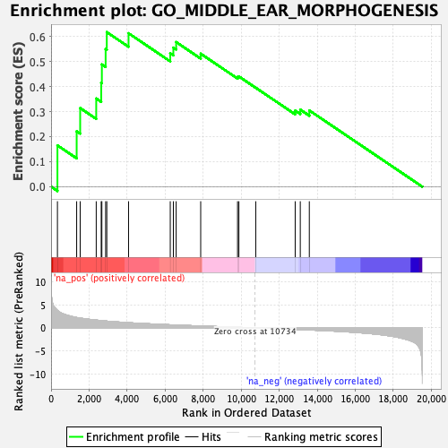

| | | Dataset | PFS |
| Phenotype | NoPhenotypeAvailable |
| Upregulated in class | na_pos |
| GeneSet | GO_MIDDLE_EAR_MORPHOGENESIS |
| Enrichment Score (ES) | 0.6173743 |
| Normalized Enrichment Score (NES) | 1.6791965 |
| Nominal p-value | 0.003533569 |
| FDR q-value | 1.0 |
| FWER p-Value | 1.0 |
Table: GSEA Results Summary

Fig 1: Enrichment plot: GO_MIDDLE_EAR_MORPHOGENESIS
Profile of the Running ES Score & Positions of GeneSet Members on the Rank Ordered List
| SYMBOL | RANK IN GENE LIST | RANK METRIC SCORE | RUNNING ES | CORE ENRICHMENT | | 1 | EDN1 | 335 | 3.794 | 0.1650 | Yes |
| 2 | INSIG2 | 1346 | 2.251 | 0.2213 | Yes |
| 3 | SIX2 | 1531 | 2.128 | 0.3140 | Yes |
| 4 | TSHZ1 | 2375 | 1.696 | 0.3522 | Yes |
| 5 | NAGLU | 2637 | 1.582 | 0.4147 | Yes |
| 6 | HOXA2 | 2672 | 1.571 | 0.4884 | Yes |
| 7 | NOG | 2870 | 1.490 | 0.5498 | Yes |
| 8 | MSX1 | 2931 | 1.471 | 0.6174 | Yes |
| 9 | PRRX1 | 4075 | 1.128 | 0.6129 | No |
| 10 | FGFR1 | 6269 | 0.674 | 0.5329 | No |
| 11 | INSIG1 | 6432 | 0.643 | 0.5554 | No |
| 12 | OSR2 | 6580 | 0.620 | 0.5777 | No |
| 13 | SIX1 | 7870 | 0.410 | 0.5313 | No |
| 14 | EYA1 | 9808 | 0.129 | 0.4382 | No |
| 15 | GSC | 9879 | 0.119 | 0.4403 | No |
| 16 | TBX1 | 10766 | -0.004 | 0.3951 | No |
| 17 | RPL38 | 12840 | -0.316 | 0.3040 | No |
| 18 | PRKRA | 13108 | -0.364 | 0.3077 | No |
| 19 | OSR1 | 13583 | -0.440 | 0.3046 | No |
Table: GSEA details [plain text format]
Fig 2: GO_MIDDLE_EAR_MORPHOGENESIS: Random ES distribution
Gene set null distribution of ES for GO_MIDDLE_EAR_MORPHOGENESIS